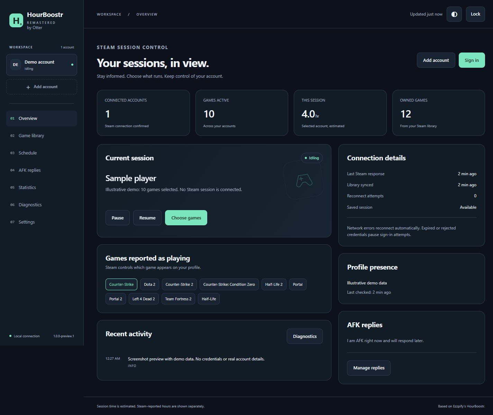

Choose a game
Browse your owned Steam library, select a game, and manage it from the local dashboard.
Open-source desktop and server app
HourBoostr Remastered continues the original HourBoostr with Steam Guard sign-in, game selection, schedules, and a dashboard you run on your own machine.
Windows x64 · Linux x64 and ARM64 · Free download

Browse your owned Steam library, select a game, and manage it from the local dashboard.
Start, pause, or set an account schedule. Keep the computer or VPS running for the session to continue.
See the connection status and compare HourBoostr’s estimated time with Steam-reported playtime.
The open-source app includes these controls for each Steam account. For features added since the downloadable preview, use the current source build. Build from source.
Set a custom message for incoming friend DMs, with a cooldown, quiet hours, and exclusions.
Rotate three messages in each group chat room and choose how often the app replies.
Automatically accept incoming friend requests from individual accounts. Optionally send your custom welcome after Steam confirms acceptance.
Generate private or group replies with a server-side Groq key. A preset can be used when AI is unavailable.
Review suggestions from selected groups. People qualify through activity on separate days and an opt-in message. You approve each outgoing request.
Review screened profile comments in a private inbox and post any response yourself in Steam.
The remaster uses SteamKit’s modern sign-in flow. The preview was tested with password and Steam Guard sign-in on Windows. Check the sign-in troubleshooting steps if Steam still rejects the login.
Sign up with Google to try the hosted member dashboard. It uses simulated Steam activity. To connect a Steam account, run the downloadable preview on your computer or VPS. Open HourBoostr Members.
Steam decides what playtime is credited. Valve’s agreement prohibits automation that inflates playtime, and Valve may restrict accounts for violations. Read the Steam Subscriber Agreement.